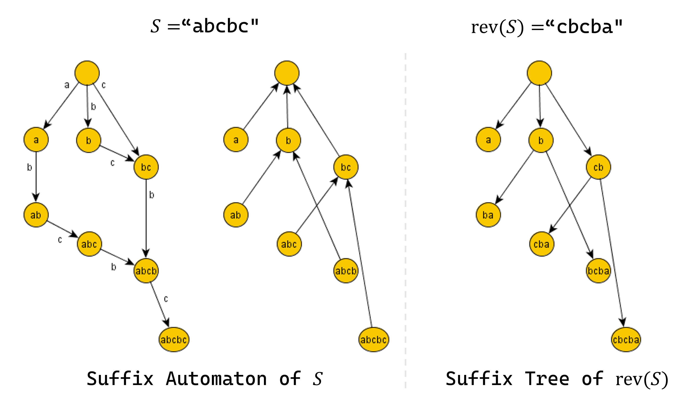

Personal Team Note
Strings
KMP (Prefix Function)
Definition
\(fail[i] := S[1 \cdots i]\)의 prefix 와 suffix 가 동일한 proper prefix의 최대 길이
조건을 만족하는 proper prefix가 없으면 \(fail[i]=0\), \(fail[0]=-1\)
Algorithm
vector<int> getFail(string S) : \(S\)의 failure function을 구함getFail(S = "?ababca") = [-1, 0, 0, 1, 2, 0, 1]- \(S\)는 1-based (leading "?")
vector<int> KMP(string S, string T) : \(S\)에서 \(T\)의 등장 위치 (시작 인덱스)를 구함KMP(S = "?aabcbabaaa", T = "?aa") = [1, 8, 9]- \(S\), \(T\)는 1-based (leading "?")
| // Get failure function of S
// getFail(S = "?ababca") = [-1, 0, 0, 1, 2, 0, 1]
vector<int> getFail(string S) // S is 1-based (leading "?")
{
int N=S.size()-1;
vector<int> fail(N+1);
fail[0]=-1;
for(int i=1; i<=N; i++)
{
int j=fail[i-1];
while(j>=0 && S[j+1]!=S[i]) j=fail[j];
fail[i]=j+1;
}
return fail;
}
// Find occurences of T in S
// KMP(S = "?aabcbabaaa", T = "?aa") = [1, 8, 9]
vector<int> KMP(string S, string T) // S, T is 1-based (leading "?")
{
int N=S.size()-1, M=T.size()-1;
vector<int> fail = getFail(T);
vector<int> ans;
for(int i=1, j=0; i<=N; i++)
{
while(j>=0 && T[j+1]!=S[i]) j=fail[j];
j++;
if(j==M) ans.push_back(i-M+1), j=fail[j];
}
return ans;
}
|
Aho-Corasick
Definition
문자열 사전 \(TV\)의 Trie를 만든 후, 각 노드에 대하여 \(par[v]\), \(fail[v]\), \(suf[v]\)를 정의한다.
- \(par[v]:=\) Trie에서 노드 \(v\)의 부모
- \(fail[v]:=\) \(v\)의 노드가 의미하는 prefix의 proper suffix 중, Trie에 존재하는 prefix와 동일한 것 중 최대 길이의 prefix로의 링크 (failure link)
- \(suf[v]:=\) 노드 \(v\)에서 failure link를 타고 올라가면서 만나는 첫 번째 terminal node로의 링크 (suffix link)
Trie의 루트 노드와 루트 노드의 자식 노드들의 fail 링크는 루트 노드로 정의한다.
\(par[root]=fail[root]=suf[root]=root\)로 정의한다.
Algorithm
vector<int> AhoCorasick(string S, vector<string> TV) : \(S\)에서 문자열 사전 \(TV\)의 등장 위치(끝 인덱스)를 구함AhoCorasick(S = "mississippi", TV = ["ss", "sis", "ippi", "pp"]) = [3, 5, 6, 9, 10]void makeTrie(vector<string> SV) : 문자열 사전 \(SV\)의 Trie를 만들고, 모든 노드의 \(par[v]\), terminal 노드의 \(suf[v]\)를 결정void bfs() : 모든 노드의 \(fail[v]\), \(suf[v]\)를 결정- \(S, TV[0], TV[1], \cdots\)는 0-based
| // par[v] = parent of node v
// fail[v] = failure link of node v
// suf[v] = suffix link of node v
struct Node
{
int par, fail, suf;
vector<int> chd;
Node()
{
par=fail=suf=-1;
chd=vector<int>(26, -1);
}
};
int root;
vector<Node> NS;
// Maximum size of NS is |SV[0]|+|SV[1]|+...
int newNode()
{
NS.push_back(Node());
return NS.size()-1;
}
// Make trie of dictionary SV
// Determine par[v] for all nodes, suf[v] for terminal nodes
void makeTrie(vector<string> SV) // SV[0], SV[1], ... is 0-based
{
root=newNode();
NS[root].par=root; NS[root].fail=root; NS[root].suf=root;
for(auto &S : SV)
{
int now=root;
for(auto c : S)
{
if(NS[now].chd[c-'a']==-1)
{
int nxt=NS[now].chd[c-'a']=newNode();
NS[nxt].par=now;
}
now=NS[now].chd[c-'a'];
}
NS[now].suf=now;
}
}
// Determine fail[v], suf[v] for all nodes
void bfs()
{
queue<int> Q;
Q.push(root);
while(!Q.empty())
{
int now=Q.front(); Q.pop();
for(int i=0; i<26; i++) if(NS[now].chd[i]!=-1)
{
int nxt=NS[now].chd[i];
if(now==root) NS[nxt].fail=root;
else
{
int p;
for(p=NS[now].fail; p!=root; p=NS[p].fail) if(NS[p].chd[i]!=-1) break;
if(NS[p].chd[i]==-1) NS[nxt].fail=root;
else NS[nxt].fail=NS[p].chd[i];
}
if(NS[nxt].suf==-1) NS[nxt].suf=NS[NS[nxt].fail].suf;
Q.push(nxt);
}
}
}
// Find occurences of TV[0], TV[1], ... in S
// AhoCorasick(S = "mississippi", TV = ["ss", "sis", "ippi", "pp"]) = [3, 5, 6, 9, 10]
vector<int> AhoCorasick(string S, vector<string> TV) // S, TV[0], TV[1], ... is 0-based
{
vector<int> ans;
makeTrie(TV);
bfs();
int now=root;
for(int i=0; i<S.size(); i++)
{
for(; now!=root && NS[now].chd[S[i]-'a']==-1; now=NS[now].fail);
if(NS[now].chd[S[i]-'a']!=-1) now=NS[now].chd[S[i]-'a'];
// now is matching node in trie with S[0...i]
// your code goes here
if(NS[now].suf!=root) ans.push_back(i); // Ending position of occurences in S
}
return ans;
}
|
Z Function
Definition
\(Z[i] := i\)에서 시작하는 \(S\)의 suffix와 전체 문자열 \(S\)의 longest common prefix의 길이
\(Z[i] := LCP(S[1 \cdots ], S[i \cdots])\), \(i \ge 2\)부터 정의되고, \(Z[1]=0\)이라 한다.
Algorithm
vector<int> getZ(string S) : \(S\)의 Z function을 구함getZ(S = "?abacaba") = [-, 0, 0, 1, 0, 3, 0, 1]- \(Z[i] = LCP(S[i \cdots ], S)\)
- \(S\)는 1-based (leading "?")
vector<int> matchZ(string S, string T) : \(S\)의 모든 suffix들과 \(T\) 전체의 LCP를 구함matchZ(S = "?abacabacaba", T = "?abacaba") = [-, 7, 0, 1, 0, 7, 0, 1, 0, 3, 0, 1]- \(F[i] = LCP(S[i \cdots], T)\)
- \(S\), \(T\)는 1-based (leading "?")
| // Get Z function of S
// Z[i] = LCP(S[i...], S)
// getZ(S = "?abacaba") = [-, 0, 0, 1, 0, 3, 0, 1]
vector<int> getZ(string S) // S is 1-based (leading "?")
{
int N=S.size()-1;
vector<int> Z(N+1);
int pos=1;
for(int i=2; i<=N; i++)
{
if(i<=pos+Z[pos]-1) Z[i]=min(pos+Z[pos]-i, Z[i-pos+1]);
while(i+Z[i]<=N && S[i+Z[i]]==S[Z[i]+1]) Z[i]++;
if(Z[pos]+pos<Z[i]+i) pos=i;
}
return Z;
}
// Get LCP of all suffixes in S with T
// F[i] = LCP(S[i...], T)
// matchZ(S = "?abacabacaba", T = "?abacaba") = [-, 7, 0, 1, 0, 7, 0, 1, 0, 3, 0, 1]
vector<int> matchZ(string S, string T) // S, T is 1-based (leading "?")
{
int N=S.size()-1, M=T.size()-1;
vector<int> Z = getZ(T);
vector<int> F(N+1);
int pos=0;
for(int i=1; i<=N; i++)
{
if(i<=pos+F[pos]-1) F[i]=min(Z[i-pos+1], pos+F[pos]-i);
while(i+F[i]<=N && F[i]+1<=M && S[i+F[i]]==T[F[i]+1]) F[i]++;
if(pos+F[pos]<i+F[i]) pos=i;
}
return F;
}
|
Manacher
Definition
\(P[i] :=\) \(S\)에서 \(i\)를 중심으로 하는 palindrome의 최대 반지름의 길이
\(S[i-P[i] \cdots i+P[i]]\)가 palindrome인 최대 \(P[i]\)
Algorithm
vector<int> manacher(string S) : \(S\)의 manacher 함수의 실행 결과를 구함manacher(S = "?abcbab") = [-, 0, 0, 2, 0, 1, 0]- \(P[i] = S[i-P[i] \cdots i+P[i]]\)가 palindrome인 최대 \(P[i]\)
- \(S\)는 1-based (leading "?")
| // Get maximum radius of palindrome at each center
// S[i-P[i] ... i+P[i]] is palindrome
// manacher(S = "?abcbab") = [-, 0, 0, 2, 0, 1, 0]
vector<int> manacher(string S) // S is 1-based (leading "?")
{
int N=S.size()-1;
vector<int> P(N+1);
int pos=0;
for(int i=1; i<=N; i++)
{
if(i<=pos+P[pos]) P[i]=min(pos+P[pos]-i, P[pos+pos-i]);
while(i+P[i]+1<=N && i-P[i]-1>=1 && S[i-P[i]-1]==S[i+P[i]+1]) P[i]++;
if(P[pos]+pos<P[i]+i) pos=i;
}
return P;
}
|
Suffix Array, LCP Array
Definition
- \(SA[i] := S\)의 suffix들을 사전순으로 정렬했을 때, \(i\)번째 등장하는 suffix의 시작 인덱스
- \(R[i] := i\)에서 시작하는 suffix의 사전순 비교 순서, \(R[SA[i]]=i\)
- \(LCP[i] :=\) \(SA[i]\)에서 시작하는 suffix와 \(SA[i-1]\)에서 시작하는 suffix의 longest common prefix의 길이
\(LCP[i] = LCP(S[SA[i-1]...], S[SA[i]...])\) \((2 \le i)\)
Algorithm
void getSA(string S) : \(S\)의 suffix array를 구함 (SA, R 배열을 채움)void getLCP(string S) : \(S\)의 LCP array를 구함 (LCP 배열을 채움)getSA("?banana") => SA = [-, 6, 4, 2, 1, 5, 3], R = [-, 4, 3, 6, 2, 5, 1]getLCP("?banana") => LCP = [-, -, 1, 3, 0, 0, 2]MAXN이 선언되어야 함- \(S\)는 1-based (leading "?")
| // MAXN must be defined
const int MAXN = 5e5;
int SA[MAXN+10], R[MAXN+10], LCP[MAXN+10];
// Get suffix array of S
// Fill SA[i], R[i]
// getSA("?banana") => SA = [-, 6, 4, 2, 1, 5, 3], R = [-, 4, 3, 6, 2, 5, 1]
void getSA(string S) // S is 1-based (leading "?")
{
int N=S.size()-1;
vector<int> F(N+1), T(N+1);
for(int i=1; i<=N; i++) SA[i]=i;
sort(SA+1, SA+N+1, [&](const int &p, const int &q) { return S[p]<S[q]; });
for(int i=1; i<=N; i++) R[SA[i]]=R[SA[i-1]]+(i==1 || S[SA[i]]!=S[SA[i-1]]);
for(int i=1; i<=N; i<<=1)
{
F[0]=i;
for(int j=i+1; j<=N; j++) F[R[j]]++;
for(int j=1; j<=N; j++) F[j]+=F[j-1];
for(int j=1; j<=N; j++) SA[F[(j+i>N ? 0 : R[j+i])]--]=j;
for(int j=0; j<=N; j++) F[j]=0;
for(int j=1; j<=N; j++) F[R[j]]++;
for(int j=1; j<=N; j++) F[j]+=F[j-1];
for(int j=1; j<=N; j++) T[j]=SA[j];
for(int j=N; j>=1; j--) SA[F[R[T[j]]]--]=T[j];
for(int j=0; j<=N; j++) F[j]=0;
for(int j=1; j<=N; j++) T[j]=R[j];
for(int j=1; j<=N; j++)
{
R[SA[j]]=R[SA[j-1]];
if(j==1) R[SA[j]]++;
else if(T[SA[j]]!=T[SA[j-1]]) R[SA[j]]++;
else if((SA[j]+i>N)!=(SA[j-1]+i>N)) R[SA[j]]++;
else if(SA[j]+i<=N && SA[j-1]+i<=N && T[SA[j]+i]!=T[SA[j-1]+i]) R[SA[j]]++;
}
}
}
// Get LCP array of S
// getLCP("?banana") => LCP = [-, -, 1, 3, 0, 0, 2]
void getLCP(string S) // S is 1-based (leading "?")
{
int N=S.size()-1;
for(int i=1; i<=N; i++) R[SA[i]]=i;
for(int i=1, k=0; i<=N; i++)
{
if(R[i]>1)
{
for(; i+k<=N && SA[R[i]-1]+k<=N && S[i+k]==S[SA[R[i]-1]+k]; k++);
LCP[R[i]]=k;
}
if(k) k--;
}
}
|
Suffix Automaton
Definition
문자열 \(S\)로 suffix automaton을 만들고, 각 노드에 대하여 \(link[v]\), \(len[v]\)를 정의한다.
- \(endpos(t):=\) \(S\)에서 부분문자열 \(t\)를 모두 찾았을 때 가능한 끝점의 위치의 집합
\(t\)가 빈 문자열인 경우 \(endpos(\phi)=\{ 0, 1, 2, \cdots, |S| \}\), \(t\)가 \(S\)의 부분문자열이 아닌 경우 \(endpos(t)=\phi\)
- \(len[v] :=\) 정점 \(v\)에 대응되는 부분문자열들 중 가장 긴 것의 길이
- \(link[v] :=\) 정점 \(v\)에 대응되는 부분문자열들 중 가장 긴 것을 \(w\)라 할 때, \(w\)의 suffix 중 다른 \(endpos\) 집합을 갖는 가장 긴 suffix와 대응되는 정점
Property
\(S\)의 suffix automaton의 suffix link를 이어 연결한 tree는 \(S\)를 뒤집은 문자열 \(rev(S)\)의 suffix tree와 일치한다.
Suffix automaton에서 각 정점 \(v\)에 대응되는 부분문자열 \(longest(v)\)는 \(rev(S)\)의 suffix tree에서 \(rev(longest(v))\)를 의미한다.

Algorithm
void getSA(string S) : \(S\)의 suffix automaton을 구함vector<int> getST(string S) : \(S\)의 suffix tree를 구함, 각 suffix에 해당하는 리프 노드의 번호를 리턴- \(pos[i] =\) suffix \(S[1 \cdots i]\)에 해당하는 리프 노드의 번호
root : suffix automaton / suffix tree의 루트 노드void SA_push(char c) : \(c\)를 suffix automaton에 추가함last, root를 초기화해야함- \(S\)는 1-based (leading "?")
| // len[v] = longest substring corresponding to v
// link[v] = suffix link of v
// chd[v] = children node of v in suffix automaton ** NOT SUFFIX TREE **
struct Node
{
int len, link;
vector<int> chd;
Node()
{
len=0; link=-1;
chd=vector<int>(26, -1);
}
};
vector<Node> NS;
// last, root needs to be initialized
int last=-1, root=-1;
// Maximum size of NS is 2|S|
// Maximum number of edge is 3|S|
int newNode()
{
NS.push_back(Node());
return NS.size()-1;
}
// Insert c into suffix automaton
// last = last node corresponding to entire string before c
void SA_push(char c)
{
int cur=newNode();
NS[cur].len=NS[last].len+1;
int p=last;
for(; p!=-1 && NS[p].chd[c-'a']==-1; p=NS[p].link) NS[p].chd[c-'a']=cur;
if(p==-1) NS[cur].link=0;
else
{
int q=NS[p].chd[c-'a'];
if(NS[p].len+1==NS[q].len) NS[cur].link=q;
else
{
int clone=newNode();
NS[clone].len=NS[p].len+1;
NS[clone].link=NS[q].link;
NS[clone].chd=NS[q].chd;
for(; p!=-1 && NS[p].chd[c-'a']==q; p=NS[p].link) NS[p].chd[c-'a']=clone;
NS[q].link=clone; NS[cur].link=clone;
}
}
last=cur;
}
// Get suffix automaton of S
// root = root node of suffix automaton
void getSA(string S) // S is 1-based (leading "?")
{
int N=S.size()-1;
root=last=newNode();
for(int i=1; i<=N; i++) SA_push(S[i]); // last is current node
}
// Get suffix tree of S
// Return array of nodes corresponding to each suffix
// pos[i] = leaf node of S[i...] in suffix tree of S
// root = root node of suffix tree
vector<int> getST(string S) // S is 1-based (leading "?")
{
int N=S.size()-1;
vector<int> pos(N+1);
root=last=newNode();
for(int i=N; i>=1; i--)
{
SA_push(S[i]);
pos[i]=last;
}
return pos;
}
|
Geometry
Graph
Eulerian trail
Definition
Eulerian trail은 Directed / Undirected graph의 모든 간선을 정확히 한 번씩 사용하는 경로이다.
Eulerian trail이 존재할 필요충분조건은 다음과 같다.
- Directed graph에서는 모든 정점의 indegree와 outdegree가 같다.
- Undirected graph에서는 Odd degree의 정점이 \(0\)개 혹은 \(2\)개이다.
| // MAXN, MAXM must be defined
const int MAXN = 1e5;
const int MAXM = 1e5;
int N, M;
vector<pii> adj[MAXN+10];
int pos[MAXN+10];
bool used[MAXM+10];
vector<int> ST;
void euler(int now)
{
while(pos[now]<adj[now].size())
{
auto &[nxt, p] = adj[now][pos[now]++];
if(used[p]) continue;
used[p]=true;
euler(nxt);
}
ST.push_back(now);
}
// Get euler trail(cycle) of undirected graph
// Return euler trail (nodes) (empty vector if impossible)
// N = number of nodes, M = number of edges, E = vector of edges
// S = starting node (0 if not defined)
vector<int> getEuler(int _N, int _M, vector<pii> E, int S)
{
N=_N; M=_M;
for(int i=0; i<M; i++)
{
auto [u, v] = E[i];
adj[u].push_back({v, i+1});
adj[v].push_back({u, i+1});
}
for(int i=1; i<=N; i++) pos[i]=0;
for(int i=1; i<=M; i++) used[i]=false;
// INIT finished
vector<int> O;
for(int i=1; i<=N; i++) if(adj[i].size()%2) O.push_back(i);
assert(O.size()%2==0);
if(O.size()>2) return vector<int>(); // More than 2 odd vertices
if(O.size()==0) // Zero odd vertices
{
if(S!=0) euler(S);
else euler(1);
}
else // Two odd vertices
{
int p=O[0], q=O[1];
if(S!=0)
{
if(S!=p && S!=q) return vector<int>();
if(S!=p) swap(p, q);
}
adj[p].insert(adj[p].begin(), {q, M+1});
adj[q].insert(adj[q].begin(), {p, M+1});
euler(p);
ST.pop_back();
}
if(ST.size()!=M+1) return vector<int>();
return ST;
}
|
Flows, Matching
Data Structure
DP opt
Math
Miscellaneous